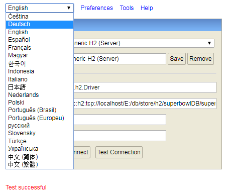

Datenbank Backup/Restore
Zum Sichern/Wiederherstellen der H2 Datenbank im laufenden Betrieb (also bei gestarteter Datenbank) verwendet man am einfachsten die in der Distribution bereitgestellte Web-Konsole. Zum Starten der H2 Web-Konsole öffnest Du ein Terminalfenster, navigierst in den Pfad /opt/h2/server/bin und starest die Konsole mittels ./h2.sh.
| Aktion | Verzeichnis | Kommando (Terminal) |
|---|---|---|
| H2 Web-Konsole starten | /opt/h2/server/bin | ./h2.sh |
H2 Web-Konsole starten
Die H2 Web-Konsole wird mittels der URL http://127.0.1.1:8082 gestartet (siehe Abb. 1).
Die im Feld JDBC URL einzutragende URL lautet:
jdbc:h2:tcp://localhost:9092//opt/h2/store/superbowl/superbowlDB
Ein Klick auf den Button Verbindung testen zeigt, ob die Datenbankverbindung besteht ( Test erfolgreich ).

Abb.1: H2 Web-Konsole
Sprache auswählen
Durch einen Klick auf das nach unten gerichtete kleine Dreieck der Dropdown-Box links oben in der H2 Web-Konsole kann die Sprache ausgewählt werden (siehe Abb. 2).

Abb.2: Sprache auswählen
Zu Tools wechseln
Ein Klick auf den Menueintrag tools in der H2 Web-Konsole zeigt die für die Administration der H2 Datenbank zur Verfügung stehenden Online-Werkzeuge (siehe Abb. 3).
Abb.3: Tools
Backup
Durch einen Klick auf den Menueintrag Backup öffnet das Backup-Eingabefenster (siehe Abb. 4).
Es empfiehlt sich die Namen der Datenbank-Sicherungsdateien nach einem bestimmten Schema aufzubauen (z.B. h2-{applikationsname}-backup-{yyyy-mm-dd}.zip).
Konkret lautet dann der Name der H2-Sicherungsdatei z.B.
h2-superbowl-backup-2017-09-05.zip
Alle Backup-Dateien sollten in das Verzeichnis /opt/h2/backup gelegt werden. Von dort können sie dann bei Bedarf zur Wiederherstellung der H2 Datenbank herangezogen werden.
In die Eingabefelder der Backup-Maske gibst Du folgende Daten ein:
| Feld | Inhalt |
|---|---|
| Ziel-Dateiname | /opt/h2/backup/h2-superbowl-backup-{yyyy-mm-dd}.zip |
| Quell-Verzeichnis | /opt/h2/store/superbowl |
| Quell-Datenbankname | superbowlDB |
Klick auf den Button Start startet den Backup-Prozess.
Abb.4: Backup der SuperbowlDB
Restore
Durch einen Klick auf den Menueintrag Restore öffnet das Restore-Eingabefenster (siehe Abb. 5).
In die Eingabefelder der Restore-Maske gibst Du folgende Daten ein:
| Feld | Inhalt |
|---|---|
| Quell-Dateiname | /opt/h2/backup/h2-superbowl-backup-{yyyy-mm-dd}.zip |
| Ziel-Verzeichnis | /opt/h2/store/superbowl |
| Ziel-Datenbankname | superbowlDB |
Klick auf den Button Start startet den Restore-Prozess.
Abb.5: Restore der SuperbowlDB